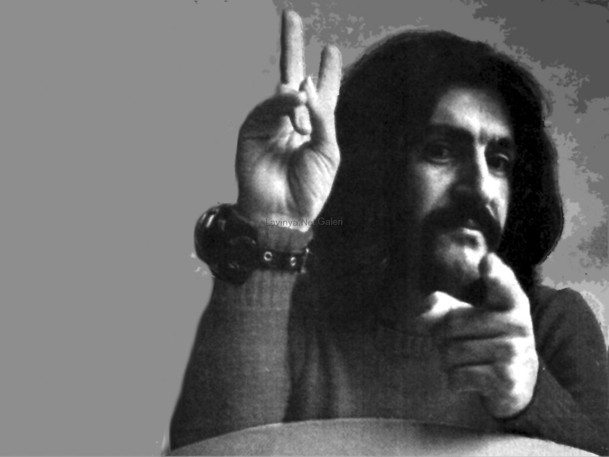
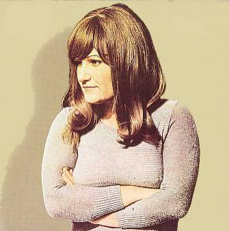
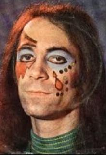
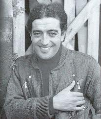
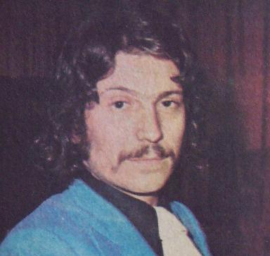
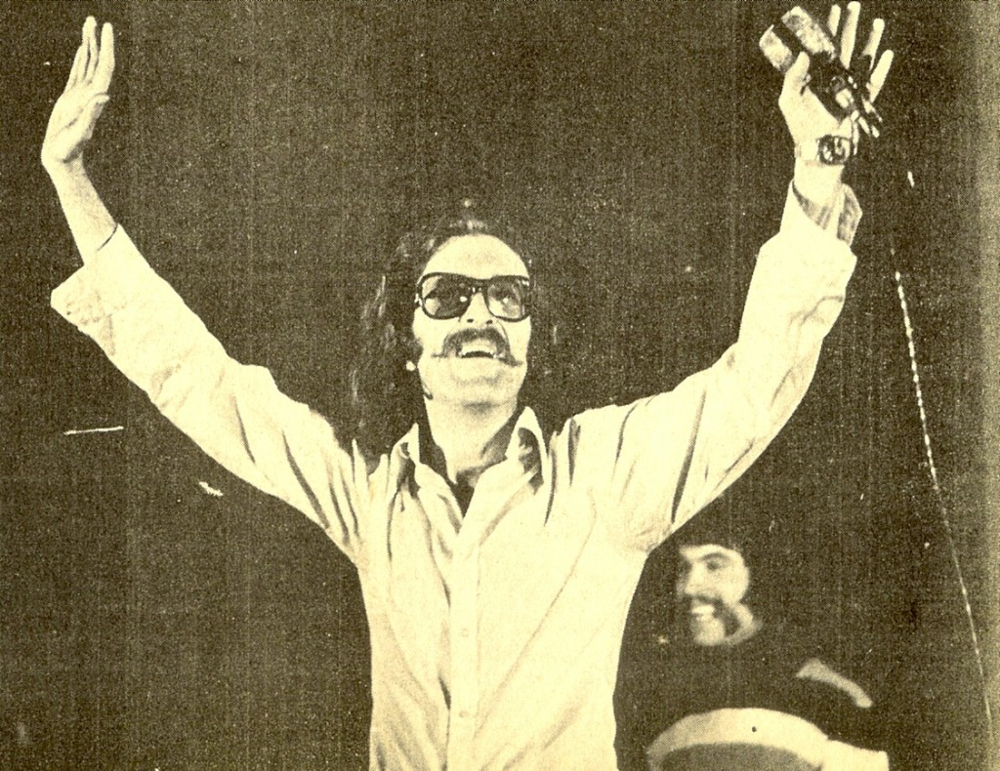

This page is devoted to hosting biographical information about the artists analyzed for this project. While these musicians are recognized as very influential in Turkey, biographical information in English online is sometimes difficult to find, so some links on this page will direct to sites in Turkish where there was no adequately informative English equivalent.
Barış Manço was one of the founders of Anatolian rock music and a popular public figure in Turkey. He was born in Istanbul in 1943 to a mother who was also a singer. He performed in bands throughout his life from high school onwards and sang in Turkish, English, and French, though he was also fluent in Japanese and conversational in German, Dutch, Spanish, and Italian. In 1973, National Geographic magazine was the first forign publication to publish a picture of him, and called him “Turkey’s rock idol.” He had his own television show later in the 80’s, 7'den 77'ye, where he travelled the world. The album 2023 was chosen because it is a concept album (he released many singles throughout his life) with many political themes. It was released in 1975, near the zenith of Anatolian rock, and provides a snapshot of a main figure in the movement at its height. Manco is highly decorated, having received over 300 trophies and prizes, including the International Medal of "Culture and Peace" from Japan for having put his music in the service of world peace. He died in 1999, with tens of thousands of people attending his public funeral.
Selda Bağcan was born in Muğla, Turkey in 1948. She was encouraged by her father to begin playing music at a young age and continued throughout her education. When she was an engineering physics student at Ankara University, she began to become interested in Turkish folk music and performed at a popular club in Ankara where she networked with other musicians in the scene. During her final year of university, she began releasing singles. She became nationally recognized and was selected by the Turkish Ministry of foreign affairs to represent Turkey in an international song contest. She is primarily a folk artist, but the album Selda and other works contain experimentation with rock and electronic sounds. She was imprisoned three times due to the political nature of her work which was leftist and espoused solidarity with the poor. She currently lives in Istanbul and runs a music production company.
Erkin Koray was born in Istanbul in 1941. It is widely claimed that Koray was the first person to ever play rock music in Turkey. He also popularized the use of the electric guitar. Koray was stabbed for having long hair as a part of his counterculture identity. Koray was a member of the band Ter, a psychedelic band, in the 1970s, but his solo work is more widely recognized. Elektronik Türküler is majorly critically recognized still today, and is a combination of traditional, psychedelic, and prog rock. Koray is also the inventor of the electric bağlama, a major instrument used in Antolian rock.
Edip Akbayram as born in Gaziantep in 1950. He contracted polio at a young age but was still very active in his passion for music, becoming an avid concertgoer. He formed his first band during high school. Akbayram said his aim in performing music was to reach the poor masses and empower them politically without compromising the quality of his music. His self-titled album collects singles from the early 70’s and is very influenced by Sufi mysticism.
Ersen Dinleten was born in 1946 in Istanbul. He practiced violin, mandolin, and guitar as a child. He played and sang in many orchestras until he met Cem Karaca and recorded a collaboration with him. After that, he had many different line-ups in his own bands, but none of them lasted very long. He is widely recognized as influential on both the pop and rock scenes in the 70’s. He had strong right-wing political beliefs that alienated him from some other musicians and fans when he recorded for the governmental media. Religious themes are common in his work.
Cem Karaca was born in 1945 in Antakya, Turkey. He was born to a popular opera and theatre actress. He began performing in cover bands until joining Apaşlar, the first band he was a part of that performed original songs and in Turkish instead of English. When political violence between the left and right arose in the 70’s, he was accused of treason by the Turkish government for his Marxism and separatist thinking. His band, Dervişan, was dissolved in 1977. He left Turkey for West Germany, fearing for his life after assassination threats, before the 1980 political coup. He lived with an active arrest warrant in Turkey and was stripped of his citizenship. In 1987 he was granted amnesty by the prime minister and died in 2004 in Turkey.
